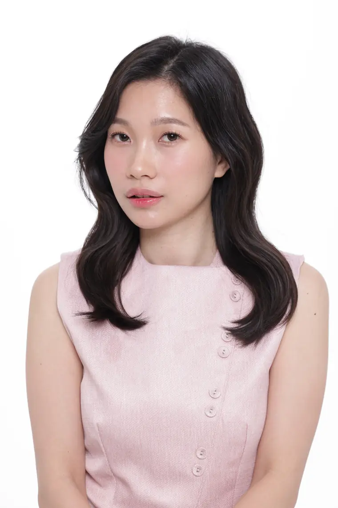
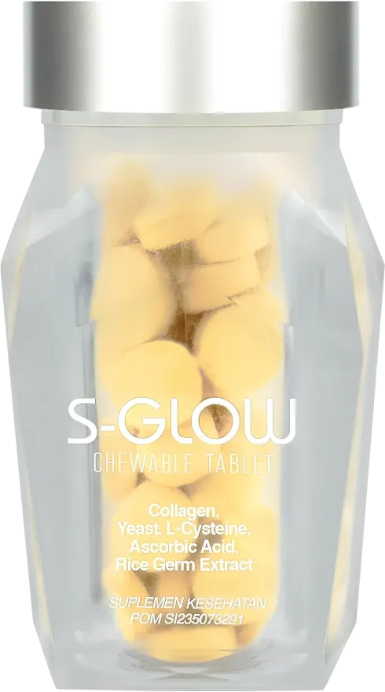
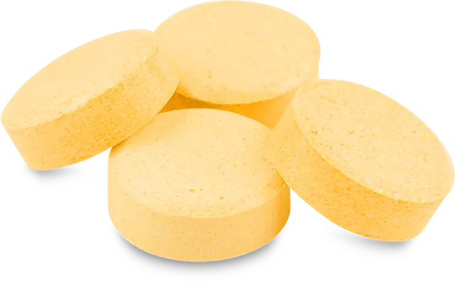

Asam askorbat · antioksidan
Vitamin C
Bersama kolagen, membentuk struktur kolagen tiga rantai yang kuat.
Menjaga elastisitas kulit & kulit kepala, melindungi akar & folikel rambut, serta membantu menetralisir radikal bebas.


SilviKonsultan S-Glow
Untuk rambut, kulit & kuku
S-Glow tablet kunyah Lemon & Persik + Kolagen dengan 5 bahan aktif, termasuk bahan paten dari Perancis & Jepang. Cukup 2 tablet sehari setelah makan.
01 · Masalah
Jangan biarkan hal kecil menutupi daya tarikmu. Tap semua yang sesuai kondisimu.
Pilih minimal satu kondisi di atas.
Lihat solusinyaFaktor yang memengaruhi kesehatan rambut, kuku & kulit
02 · Solusi
Kosmetik mahal hanya menutupi sementara. S-Glow menggabungkan nutrisi kompleks yang mendukung kesehatan rambut, kuku & kulit, meningkatkan produksi kolagen, dan membantu mencegah kerusakan akibat radikal bebas.

03 · Komposisi
Pilih kebutuhanmu, lalu tap tiap bahan untuk melihat perannya.
Asam askorbat · antioksidan
Bersama kolagen, membentuk struktur kolagen tiga rantai yang kuat.
Menjaga elastisitas kulit & kulit kepala, melindungi akar & folikel rambut, serta membantu menetralisir radikal bebas.
04 · Testimoni
Diambil dari chat WhatsApp pelanggan dengan Silvi. Nama disamarkan.
“Aku pakai S-Glow untuk rambut… lumayan tumbuh rambut baru. Rencananya mau ku coba untuk suamiku juga.”
“Botol S-Glow ke-2, baru muncul rambut tipis.”
“Tgl 6 Desember habis keramas, Ci Sil… Semoga minggu ke-3 udah ada rambut baru.”
Hasil dapat berbeda pada tiap orang.
05 · Sertifikat
Nomor registrasi tertera di kemasan. Cek keasliannya di cekbpom.pom.go.id.
No. sertifikat: [nomor sertifikat halal]. Lihat sertifikat
Bisa. S-Glow cocok untuk wanita dan pria yang ingin melengkapi nutrisi harian untuk rambut, kuku & kulit.
Kunyah 2 tablet per hari setelah makan untuk perawatan rutin.
Ya. S-Glow adalah suplemen makanan yang aman dikonsumsi bersama suplemen lainnya. Ikuti petunjuk penggunaan dan jumlah yang direkomendasikan pada label.
Lynside® Forte B membantu mendukung sistem kekebalan tubuh dan penting untuk sistem saraf yang sehat. L-sistein dan asam askorbat membantu menetralisir radikal bebas yang dapat merusak sel.
Konsultasi gratis dengan Silvi: tanya kondisi rambutmu, cara konsumsi, sampai promo terbaru.